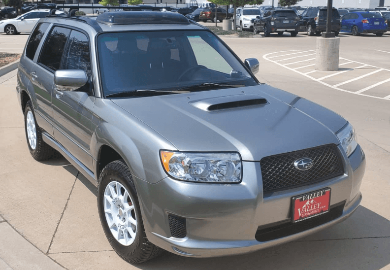
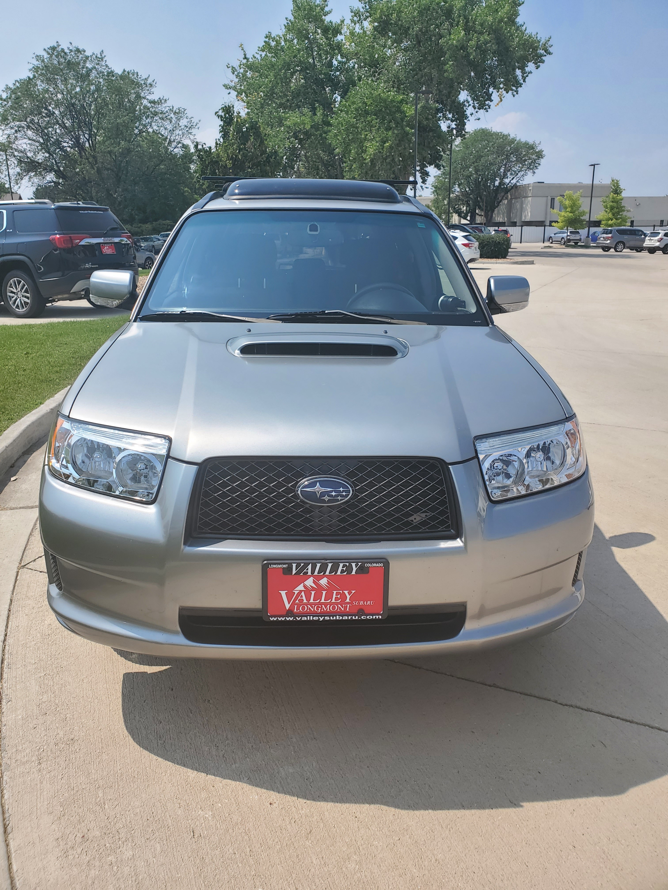
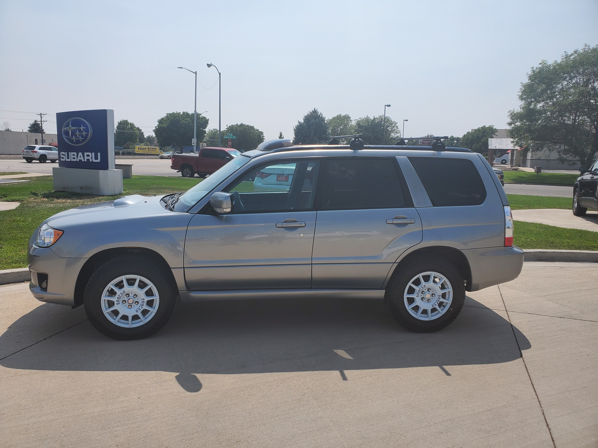
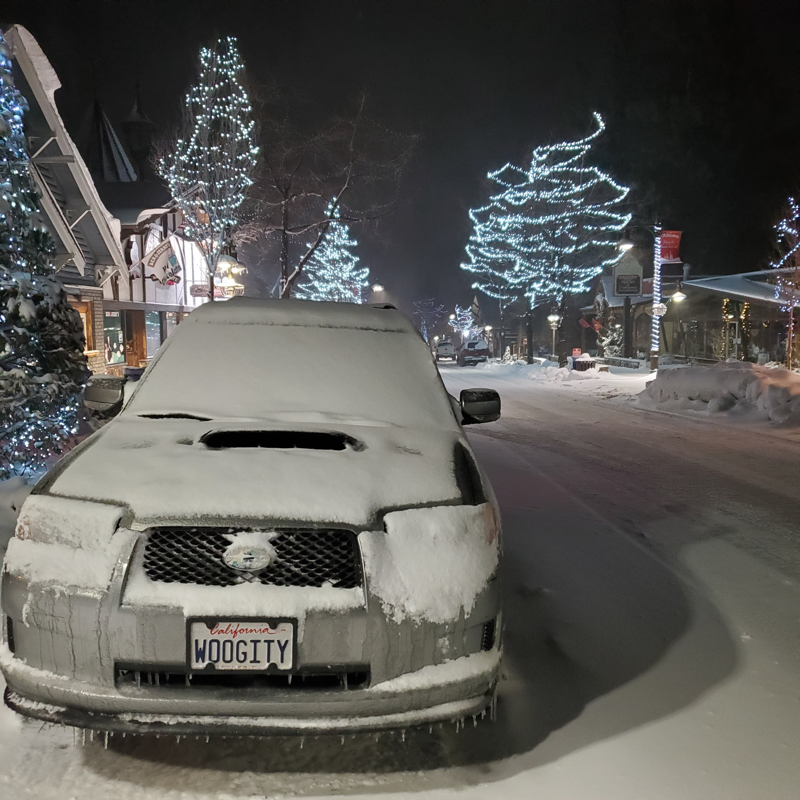
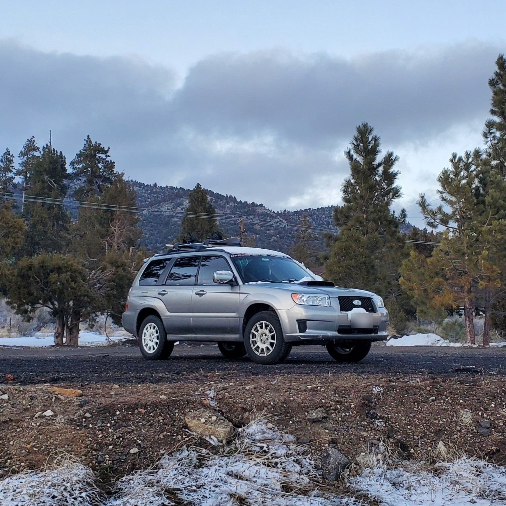
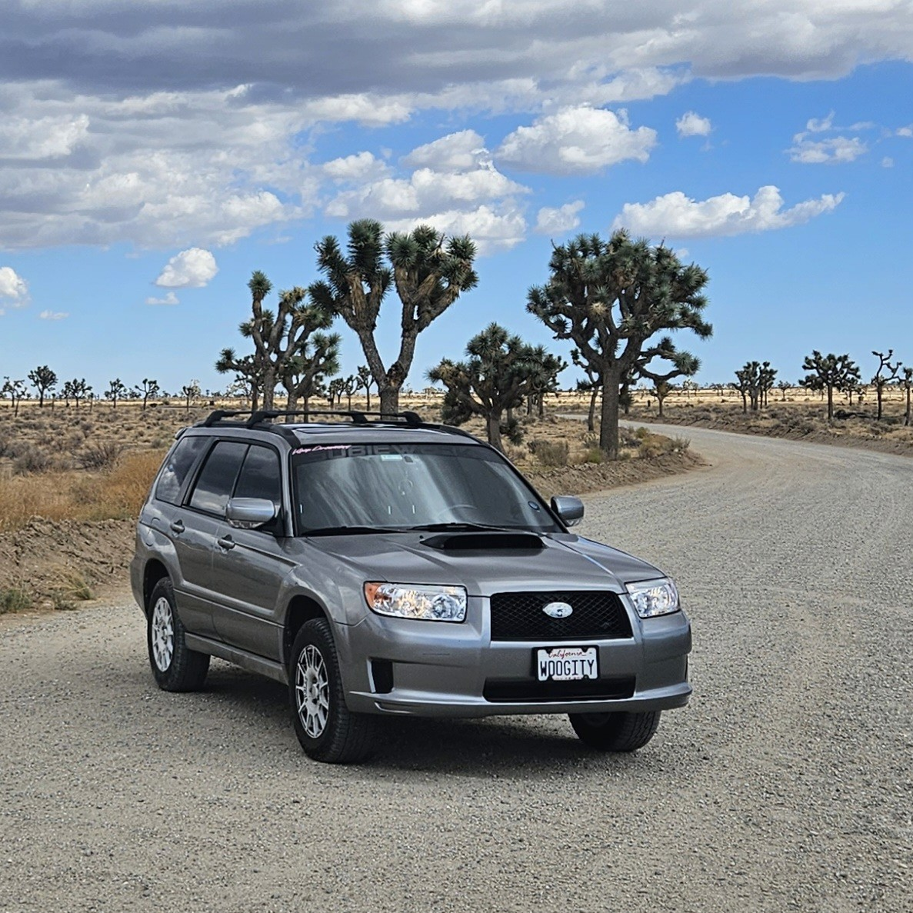
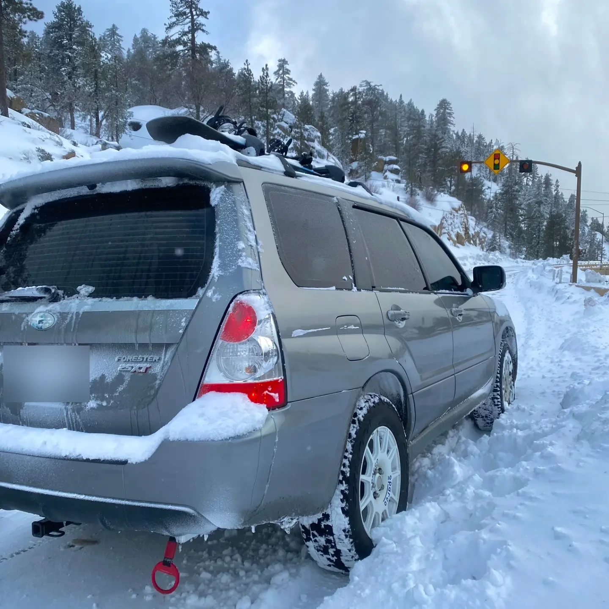

Welcome to my Subaru Forester XT Sports
A deep dive into my 2007 Subaru Forester XT Sports—its history, capabilities, and why it’s the perfect platform for performance and modifications.
Introduction to the SG Subaru Forester XT:
The Subaru Forester, spanning the years 2003 to 2008, is the 2nd generation of the Forester and labeled with the designation SG. It is a pivotal era in Subaru’s history of creating versatile, robust, and performance-oriented vehicles. Known for its practicality combined with an adventurous spirit, the Forester has garnered a loyal following among car enthusiasts and everyday drivers alike. My particular model, the SG6, holds a special place in Subaru’s lineage as it marks the last generation where a turbocharged engine was paired with a manual transmission in the U.S., making it a unique blend of power and control.
Vehicle Overview:
Painted in a sleek Urban Grey Metallic (45A), this Forester XT Sports was purchased with a mere 68k miles on it, making me the proud second owner of a near-stock vehicle. At the time of purchase, it was modestly enhanced with 1-inch King lift springs, Sparco Terra rims, and a Kartboy short throw shifter, subtly hinting at its performance and capabilities beyond the paved roads.
SG Forester XT Capabilities:
The SG Forester is powered by the robust EJ255 turbocharged engine, a unit renowned for its reliability and spirited performance. This engine, coupled with Subaru’s symmetrical all-wheel-drive system, provides an exceptional balance of power distribution—a feature that enhances handling on various terrains and under different driving conditions. This version also offers the thrill of manual transmission, allowing for engaging and responsive driving dynamics that are increasingly rare in modern vehicles.
Why the SG Forester XT as a Project Platform?
Parts Compatibility: One of the greatest advantages of the SG Forester is the compatibility of parts across different Subaru models, specifically the Impreza WRX and STI of this era as they are built on the same platform. This interchangeability facilitates easier and often more cost-effective modifications and repairs.
Strong Aftermarket Support: The Forester enjoys robust support from aftermarket suppliers, which is invaluable for customization. Whether upgrading for performance, aesthetics, or utility, the possibilities are extensive and accessible.
Last of its Kind: The SG Forester as the final turbo-manual combination offered in the U.S. holds a special appeal. It represents the end of an era for Subaru enthusiasts, combining classic manual transmission joy with turbocharged power.
All-Round Performer: Despite its classification as an SUV, the Forester’s lighter weight, low center of gravity, and compact dimensions relative to contemporaries ensure it remains agile and quick, ideal for those looking for an everyday vehicle with a strong performance edge.
Conclusion:
The 2007 Subaru Forester XT stands not just as a vehicle but as a platform ripe for exploration and customization. It embodies the spirit of adventure and the reliability Subaru is known for, making it an excellent base for my ongoing projects and modifications. This section of the site will delve into various projects undertaken with this Forester, showcasing the enhancements and transformations that make it uniquely suited to both daily demands and more spirited driving adventures.






